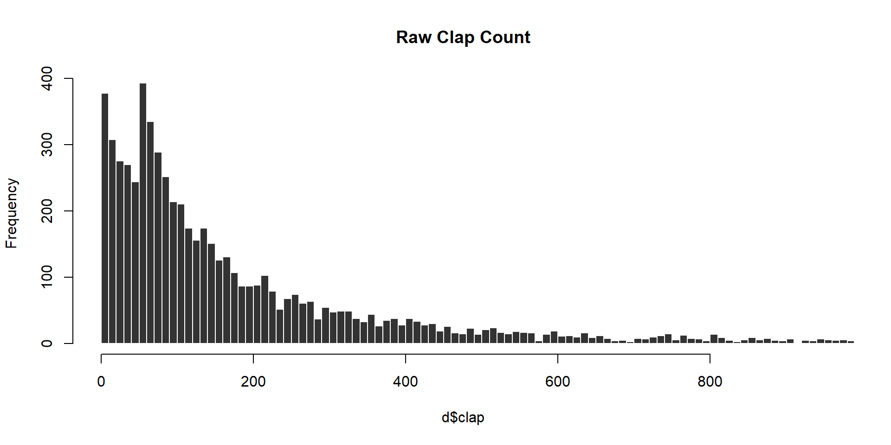
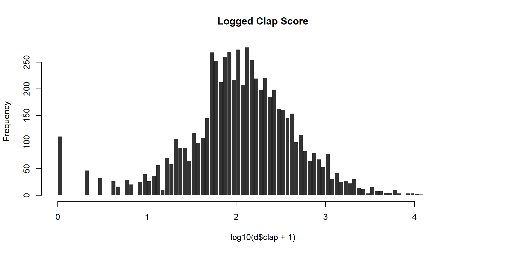
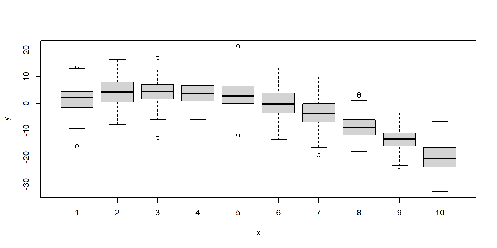

Lab 03 - Regular Expressions
Data
This lab utilizes a free Kaggle dataset describing the popularity of articles on the blogging platform Medium. We will use the following fields:
- title - the blog title
- subtitle - blog subtitle (optional)
- claps - the number of “likes” each article received
- reading_time - time (in minutes) it takes to reach each article
- publication - Medium community in which the blog was published
- date - date of publication in style YYYY-MM-DD
# URL <- "https://www.dropbox.com/s/tizgdsat2mziod6/medium-data-utf8.csv?dl=1"
URL <- "https://raw.githubusercontent.com/DS4PS/cpp-527-fall-2020/master/labs/data/medium-data-utf8-v2.csv"
d <- read.csv( URL )
preview.these <- c("title", "subtitle", "claps", "reading_time", "publication", "date")
head( d[preview.these] ) %>% pander()| title | subtitle | claps | reading_time |
|---|---|---|---|
| A Beginner’s Guide to Word Embedding with Gensim Word2Vec Model | 850 | 8 | |
| Hands-on Graph Neural Networks with PyTorch & PyTorch Geometric | 1100 | 9 | |
| How to Use ggplot2 in Python | A Grammar of Graphics for Python | 767 | 5 |
| Databricks: How to Save Files in CSV on Your Local Computer | When I work on Python projects dealing… | 354 | 4 |
| A Step-by-Step Implementation of Gradient Descent and Backpropagation | One example of building neural… | 211 | 4 |
| An Easy Introduction to SQL for Data Scientists | 563 | 8 |
| publication | date |
|---|---|
| Towards Data Science | 5/30/2019 |
| Towards Data Science | 5/30/2019 |
| Towards Data Science | 5/30/2019 |
| Towards Data Science | 5/30/2019 |
| Towards Data Science | 5/30/2019 |
| Towards Data Science | 5/30/2019 |
Text Pre-Processing Steps
The article title text is fairly clean and needs little pre-processing, but there are a couple of important issues that need to be addressed.
- Remove strange spaces
- Remove HTML tags
- Remove “hair space” dash marks
There are special spaces that appear randomly in some titles. They will appear identical to the invisible eye but will cause problems when you are trying to split titles into words. Replace them with regular spaces:
# replace all versions of space
# including special styles like
# the 'hair space' with regular spaces
d$title <- gsub( "\\s", " ", d$title )Some titles include HTML tags for emphasis. They will always occur at the start and end of the titles:
"<strong class=\"markup--strong markup--h3-strong\">Why 70% of Entrepreneurs Are Ending Their Pitches the Wrong Way</strong>"
"<strong class=\"markup--strong markup--h3-strong\">Tackle Negative Core Beliefs</strong>"There are some stylized dashes in the text that are book-ended with “hair space” characters, which are thinner-than-usual spaces.
In the UTF-8 text encoding they come out as:
<U+200A>—<U+200A>Since they are not actual words, remove all of these hairspace-dashes from the text.
Create a Performance Measure
We can track article performance in many ways. This dataset contains “claps”, which are the equivalent of a thumbs-up or like on other platforms.
It also contains a responses category, but that is a little more complicated to interpret because comment might be asking for clarification because the article was poorly-written or arguing a counter-point becaue the article was controversial.
We will use claps to measure article popularity, but note the skew in the raw measure:


Create a new clap score to measure performance using the following log transformation:
Lab Questions
Q1 - Comparing Title Styles
Which title style consistently gets the most claps (clap score)?
Power Lists:
- “Six Recommendations for Aspiring Data Scientists”
- “13 Essential Newsletters for Data Scientists: Remastered”
- “7 Machine Learning lessons that stuck with me this year”
How to guides:
- “How to measure progress with outcomes”
- “How We Dumped A/B Testing For Machine Learning”
- “How To Be Productive Without Being Hard on Yourself”
Something Colon Something:
- “Business Checkup: 10 Ways to Improve your 2020 Communications”
- “ReFocus: Making Out-of-Focus Microscopy Images In-Focus Again”
- “Review: SqueezeNet (Image Classification)”
Questions:
- “Why Do Financial Models Break?”
- “What Is Econometrics?”
- “Can AI Robots Rebel Against Us, as Shown in Films?”
- “Can You Invest Like a Top Fund Manager?”
- “So you’re building a “Superhuman of X”?"
Other:
All other styles not included in these.
Use regular expressions in order to identify all of the titles that belong in each category.
# grepl returns TRUE for all cases that
# match the expression and FALSE otherwise
category.members <- grepl( "expression", titles )Q1-A:What is the average performance (clap score) of each type of title?
Q1-B:Which style of title performs the best overall?
Q2 - Content Analysis
Split each title into a group of distinct words.
Q2-A: What are the 25 most common words used in the titles?
Q2-B: What is the most common word used at the beginning of a title?
Q2-C: What is the most common word used at the end of a title?
Hint: be sure to convert all words to the same case so that variants like “How” and “how” are treated the same.
When splitting a title into words note that the string split function returns a list.
This is a sensible data structure since you want to keep the atomized words grouped by their original titles, but it makes it hard to do content analysis:
first.six.titles <-
c("A Beginner’s Guide to Word Embedding with Gensim Word2Vec Model",
"Hands-on Graph Neural Networks with PyTorch & PyTorch Geometric",
"How to Use ggplot2 in Python", "Databricks: How to Save Files in CSV on Your Local Computer",
"A Step-by-Step Implementation of Gradient Descent and Backpropagation",
"An Easy Introduction to SQL for Data Scientists")
word.list <- strsplit( first.six.titles, " " )
word.list## [[1]]
## [1] "A" "Beginner’s" "Guide" "to" "Word"
## [6] "Embedding" "with" "Gensim" "Word2Vec" "Model"
##
## [[2]]
## [1] "Hands-on" "Graph" "Neural" "Networks" "with" "PyTorch"
## [7] "&" "PyTorch" "Geometric"
##
## [[3]]
## [1] "How" "to" "Use" "ggplot2" "in" "Python"
##
## [[4]]
## [1] "Databricks:" "How" "to" "Save" "Files"
## [6] "in" "CSV" "on" "Your" "Local"
## [11] "Computer"
##
## [[5]]
## [1] "A" "Step-by-Step" "Implementation" "of"
## [5] "Gradient" "Descent" "and" "Backpropagation"
##
## [[6]]
## [1] "An" "Easy" "Introduction" "to" "SQL"
## [6] "for" "Data" "Scientists"Similar to re-casting data types, you can convert the list to a character vector using unlist():
## [1] "A" "Beginner’s" "Guide" "to"
## [5] "Word" "Embedding" "with" "Gensim"
## [9] "Word2Vec" "Model" "Hands-on" "Graph"
## [13] "Neural" "Networks" "with" "PyTorch"
## [17] "&" "PyTorch" "Geometric" "How"
## [21] "to" "Use" "ggplot2" "in"
## [25] "Python" "Databricks:" "How" "to"
## [29] "Save" "Files" "in" "CSV"
## [33] "on" "Your" "Local" "Computer"
## [37] "A" "Step-by-Step" "Implementation" "of"
## [41] "Gradient" "Descent" "and" "Backpropagation"
## [45] "An" "Easy" "Introduction" "to"
## [49] "SQL" "for" "Data" "Scientists"Counting the first or last words:
These questions require you to break into the list version of the results and extract either the first or last word from each.
# x is a single title
get_first_word <- function( x )
{
# split title x into words
# unlist results
# select the first word
# return first word
}
# test your function
x <- d$title[1]
get_first_word( x )When results are stored as lists there is an extra step to the analysis.
You need to apply your function to each element in the list. There are several versions of apply() functions in R.
- lapply() applies the function to a list and returns a list
- sapply() applies the function to a list and returns a vector
lapply version:
# lapply applies the length function to each list element and returns a list
word.list <- strsplit( first.six.titles, " " )
word.count <- lapply( word.list, length )
word.count <- unlist( word.count ) # convert to a vector
word.count## [1] 10 9 6 11 8 8# sapply applies the function to all titles in the vector
# the default prints the original title with the return values
word.list <- strsplit( first.six.titles, " " )
sapply( word.list, length )## [1] 10 9 6 11 8 8To create a vector of the first title words only would then be something like:
# add USE.NAMES=F to only print return values
sapply( first.six.titles, get_first_word, USE.NAMES=FALSE )The apply functions are a more efficient version of loops - the repetition of a single operation over and over on different data elements. So the logic would be equivalent to this loop version:
Loops are effective for these types of analysis, but are extremely inefficient as the size of your dataset grows and should be avoided when possible.
And as you become more comfortable with lists they become easier to manage:
## [1] 10 9 6 11 8 8CHALLENGE QUESTION:
Is it better to use common words or unique words in your title?
Create a count of the number of times each word appears in the collection of titles.
Create a variable for the group of words that appear in the bottom quartile (0-25%) of frequencies.
Create a variable for the group of words that appear in the top quartile (75-100%) of frequencies.
Q-A: Are simple titles better?
Is performance a function of common words used?
Create a box and whisker plot showing clap scores as a function of the number of common words used.
Regress the clap score onto the numer or proportion of common words.
Q-B: Are niche titles better?
Is performance a function of uncommon words used?
Create a box and whisker plot showing clap scores as a function of the number of uncommon words used.
Regress the clap score onto the numer or proportion of uncommon words.
Creating top and bottom percentile categories:
# x <- sample( 1:100, 25, replace=T )
# dput( sort( x ) )
x <- c(1L, 2L, 19L, 19L, 20L, 21L, 23L, 24L, 31L, 34L, 36L, 40L, 48L,
50L, 51L, 56L, 63L, 67L, 73L, 74L, 83L, 84L, 91L, 92L, 96L)
summary( x )## Min. 1st Qu. Median Mean 3rd Qu. Max.
## 1.00 23.00 48.00 47.92 73.00 96.00## 0% 25% 50% 75% 100%
## 1 23 48 73 96# rank x by order and percentile
rank.x <- rank(x)
centile.x <- 100 * ( rank(x) / length(x) )
# create variable by values break points
x.25 <- quantile( x, probs=0.25 )
x.75 <- quantile( x, probs=0.75 )
top.25.x <- as.numeric( x >= x.75 ) # x >= 73
bot.25.x <- as.numeric( x <= x.25 ) # x <= 23
# create variable by percentile break points
top.25.x <- as.numeric( centile.x >= 75 ) # x >= 73
bot.25.x <- as.numeric( centile.x <= 25 ) # x <= 23
data.frame( x, rank.x, centile.x, top.25.x, bot.25.x ) %>% pander()| x | rank.x | centile.x | top.25.x | bot.25.x |
|---|---|---|---|---|
| 1 | 1 | 4 | 0 | 1 |
| 2 | 2 | 8 | 0 | 1 |
| 19 | 3.5 | 14 | 0 | 1 |
| 19 | 3.5 | 14 | 0 | 1 |
| 20 | 5 | 20 | 0 | 1 |
| 21 | 6 | 24 | 0 | 1 |
| 23 | 7 | 28 | 0 | 0 |
| 24 | 8 | 32 | 0 | 0 |
| 31 | 9 | 36 | 0 | 0 |
| 34 | 10 | 40 | 0 | 0 |
| 36 | 11 | 44 | 0 | 0 |
| 40 | 12 | 48 | 0 | 0 |
| 48 | 13 | 52 | 0 | 0 |
| 50 | 14 | 56 | 0 | 0 |
| 51 | 15 | 60 | 0 | 0 |
| 56 | 16 | 64 | 0 | 0 |
| 63 | 17 | 68 | 0 | 0 |
| 67 | 18 | 72 | 0 | 0 |
| 73 | 19 | 76 | 1 | 0 |
| 74 | 20 | 80 | 1 | 0 |
| 83 | 21 | 84 | 1 | 0 |
| 84 | 22 | 88 | 1 | 0 |
| 91 | 23 | 92 | 1 | 0 |
| 92 | 24 | 96 | 1 | 0 |
| 96 | 25 | 100 | 1 | 0 |
CHALLENGE QUESTION:
Find a package in R that will tabulate sentiment scores for a set of text.
These packages will return counts or percentages of words with positive salience (e.g. happiness, joy, laughed) and counts or percentages with negative salience (e.g. hate, disdain, smirk).
Which titles perform better? Those with high positive salience? Or those with high negative salience?
Q3 - Length of Title
Does the length of the title matter?
Q3-A: Do titles with more words get better clap scores?
Count the number of words in each title.
Then examine the clap score as a function of word count by regressing the clap score onto word count.
Visualize the relationship using a box and whisker plot:
# creating random non-meaningful data for demo
x <- sample( 1:10, size=1000, replace=TRUE )
y <- 3*x - 0.5*x*x + rnorm(1000,0,5)
f <- factor(x)
# plot( factor, numeric.vector )
plot( f, y )
Q3-B: Do longer titles get better clap scores?
Repeat the analysis from Q3-A but this time measuring title length by the number of characters in the title.
Challenge Question
Put all of the steps above together into a single regression model:
- Title style
- Title length
- Large proportion of 100 most common words
Add some additional controls:
- Presence or absence of a subtitle
- Length of the article (time it takes to read)
- Months since it was published
- The Medium community in which the blog appears:
| Better Humans | Better Marketing | Data Driven Investor | The Startup |
|---|---|---|---|
| 28 | 242 | 778 | 3041 |
| The Writing Cooperative | Towards Data Science | UX Collective |
|---|---|---|
| 403 | 1461 | 555 |
You are also free to add additional features of the titles that you create with regular expressions.
Q: Which factors best predict article performance overall?
Submission Instructions
When you have completed your assignment, knit your RMD file to generate your rendered HTML file. Platforms like BlackBoard and Canvas often disallow you from submitting HTML files when there is embedded computer code, so create a zipped folder with both the RMD and HTML files.
Login to Canvas at http://canvas.asu.edu and navigate to the assignments tab in the course repository. Upload your zipped folder to the appropriate lab submission link.
Remember to:
- name your files according to the convention: Lab-##-LastName.Rmd
- show your solution, include your code.
- do not print excessive output (like a full data set).
- follow appropriate style guidelines (spaces between arguments, etc.).
Notes on Knitting
Note that when you knit a file, it starts from a blank slate. You might have packages loaded or datasets active on your local machine, so you can run code chunks fine. But when you knit you might get errors that functions cannot be located or datasets don’t exist. Be sure that you have included chunks to load these in your RMD file.
Your RMD file will not knit if you have errors in your code. If you get stuck on a question, just add eval=F to the code chunk and it will be ignored when you knit your file. That way I can give you credit for attempting the question and provide guidance on fixing the problem.
Markdown Trouble?
If you are having problems with your RMD file, visit the RMD File Styles and Knitting Tips manual.